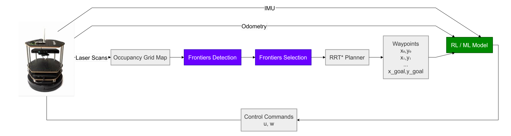
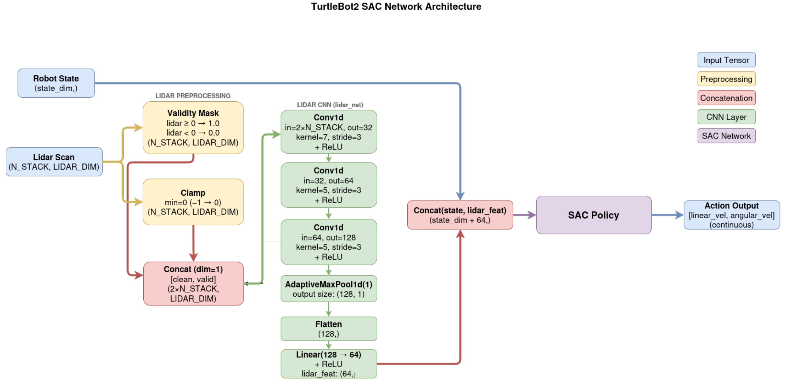
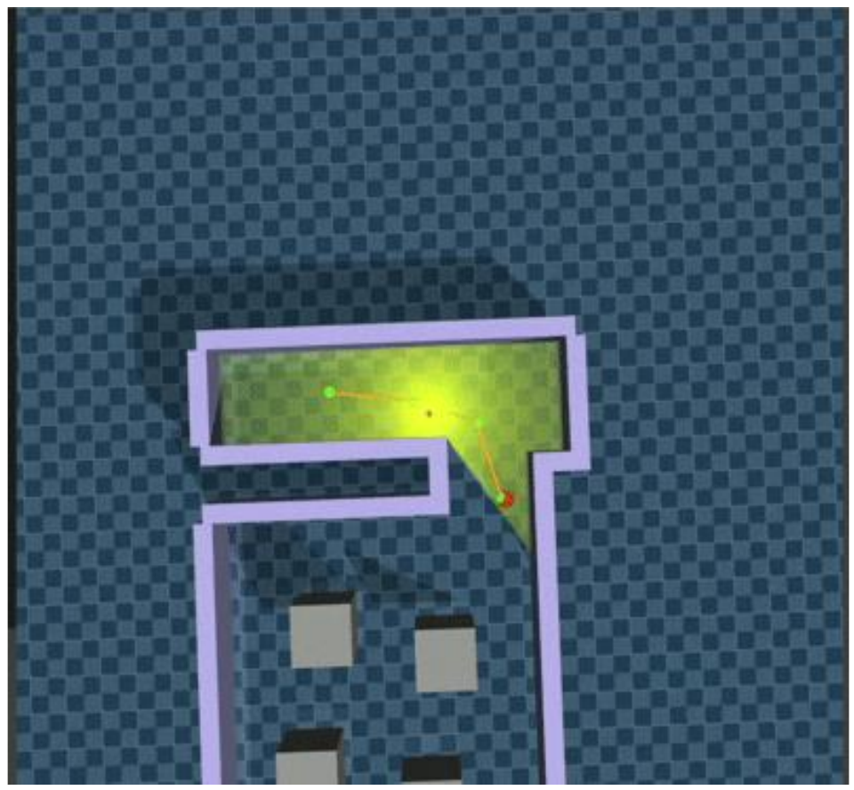
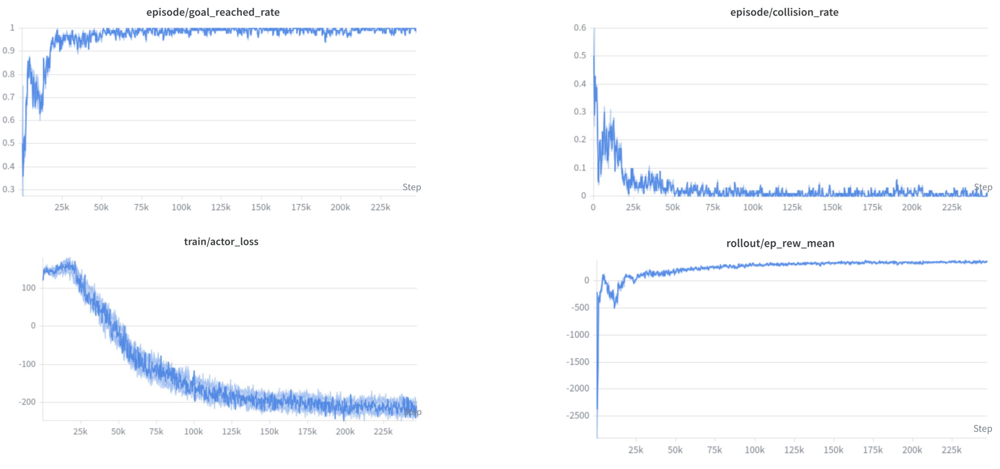
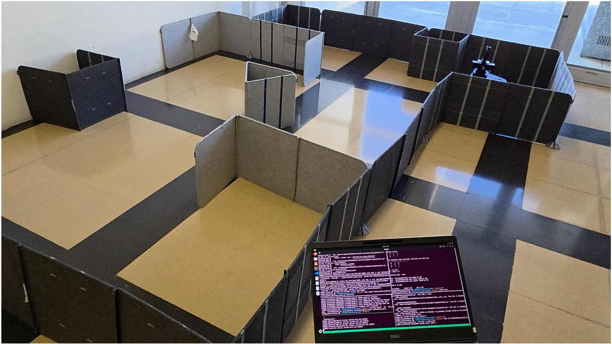

|
Hands-On Planning · Universitat de Girona
Exploration with a Deep RL Motion Planner🧭 frontier-based exploration, RRT* global planning and a SAC local planner on a real TurtleBot 2 This is my project within the Hands-On Planning course at Universitat de Girona, done together with Elchin Aslanli. We built a ROS 2 global-local planner that lets a robot explore an unknown environment on its own. Some key points:
System Overview
Each exploration cycle groups the reachable frontier cells into clusters and scores them by information gain − distance + cluster size. The chosen goal is shifted inward toward free space and checked for clearance before it is sent to the planner. Goals that time out or stop making progress are temporarily blacklisted, so the robot does not get stuck chasing an unreachable frontier. DRL Local Planner
The LiDAR scan and a validity mask are passed through three covering forward motion, progress toward the next waypoint, heading alignment, velocity smoothness, collision and obstacle-proximity penalties, path following, a turn-or-drive term for large heading errors, a waypoint bonus, and a final goal / timeout reward.   Real-World Experiment The full stack runs on the real robot: it selects useful exploration goals and generates safe motion commands in real-world conditions. As future work, we would like a CI/CD-style learning loop in which the robot keeps learning from every real-world run, not only from simulation. My part of the work was training the RL model, the RRT* planner, and testing the model in MuJoCo. Elchin worked on frontier-based exploration, pose-controller tests, and integrating the RL model on the real robot. |